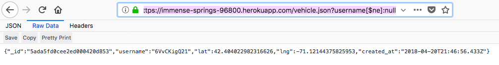

For this assignment, my job was to penetrate and analyze a classmate's code from Assignments 2 and 3, the goal being to find as many security and privacy problems as possible. I use a variety of methods to expose a few different types of issues with the application code.
I used a couple different tools to test the source code for vulnerabilities. I used both curl and Postman to change the parameters sent with the POST /rides route. I used bash and curl to send multiple requests to the server. I used Firefox to mess with the URL query parameters. Finally, I looked over the source code for additional issues.
I found a number of vulnerabilities in the source code, namely Cross Site Scripting (XSS), injection flaw, and server traffic. XSS occurs when data submitted to an application is re-displayed in the browser without any interference of security mechanisms. Simply put, the injected code is used to cause harm on the user side, as opposed to the server side. Malicious content is delivered to users using JavaScript. On the other hand, an injection flaw lets an attacker take control of something on the server side. The user can send code that the database could interpret in a way that was unintended. Finally, I found that it is possible to overload the server with requests. Basically, someone could send non-stop fake requests to the server and cause it to crash, because a continuous loop would require the processing of a huge influx of information.
Problem Location: https://immense-springs-96800.herokuapp.com/rides (POST route) | Issue displayed on https://immense-springs-96800.herokuapp.com/ (GET route)
Description: XSS is a web-based attack performed on vulnerable web apps, victimizing the user as opposed to the server-side application. I executed this attack by curling data through HTTP POST. I was able to inject simple JavaScript code as a value in the curl command to display an alert message. The command I sent and the result of this attack are pictured below.
I used Postman to tamper with input parameters as well. I made it so that the page redirects to a Youtube video by injecting JavaScript code, as shown below.
Severity: HIGH. There are some that don't see XSS as a priority issue because it does not modify the code on the backend. However, this issue is still dangerous. Instead of stealing data that is already stored on the server, data can be stolen before it is even sent. Through XSS, attackers can present users with fraudulent web content, steal cookie information, implement malicious code injection, and send annoying messages.
Resolution: To prevent against XSS, a developer can validate input. One can do this by comparing each character submitted by the user against a list of allowed and forbidden characters. This removes the ability for data to be interpreted as code. Additionally, output can be sanitized. Filtering submitted data after the fact and before it is re-displayed in the output can combat this issue while allowing for fewer constraints on user input.
Problem Location: https://immense-springs-96800.herokuapp.com/rides (POST route)
Description: It is possible to send an infinite loop of requests to the server, which can cause it to crash. I created an infinite loop with bash. In conjunction with curl, these commands execute by sending infinite requests to the server. The bash and curl commands are pictured below.
Severity: HIGH. I could leave a program running for an indefinite amount of time. After a while, the non-stop server traffic could crash the entire server that runs for the site, due to the overload of information it has to process.
Resolution: Implement a way to validate the amount of sent requests--ensure that a single request only be checked once in a given amount of time. Perhaps this could be monitered through the timestamp parameter.
Problem Location: https://immense-springs-96800.herokuapp.com/vehicles.json (GET route)
Description: An injection attack is performed by a malicious user in order to take control of something on the server side. In this case, I exposed the vulnerability in my client's code by setting the username parameter manually in the checkins.json get request. I set the parameter in the url to "username[$ne]:null" which returned all of the registered vehicles with their locations and timestamps.
Severity: HIGH. Injection flaws allow malicious users to create, read, update, or delete any arbitrary data available to the application. This is dangerous, as an attacker can affect the entire application as well as its underlying systems.
Resolution: In the source code, the client compares to query to the database records with "collection.find( {"username" : username } )." If this were replaced with "collection.find({username:{$eq:username}})" then the site would be secured against manual tampering on the request query key and value. $eq compares two values and returns true when values are equivalent.
It is important to remember that user input is not to be trusted! Consequently, a developer should be very careful when working with a server that takes such data. This exercise reveals the extreme vulnerability of the servers we created in class. Most of the issues found occur due to input data validation, which should be considered when developing a secure application.
I refered to a number of webpages, as well as my partner William Zhang's source code.
Links:
https://zanon.io/posts/nosql-injection-in-mongodb
https://www.owasp.org/index.php/Top_10_2007-Injection_Flaws
https://blog.rapid7.com/2013/06/20/xss-vs-injection/
http://www.veracode.com/security/xss
https://tuftsdev.github.io/WebProgramming/notes/web_security.html